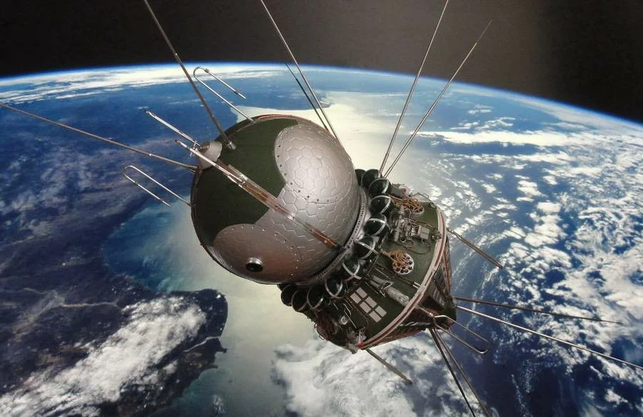

Основные этапы освоения космоса

Содержание
Запуск первого космического аппарата
Кодовое обозначение аппарата — «Простейший Спутник-1»«Спутник-1» — это советский космический аппарат, ставший первым искусственным спутником Земли и запущенный 4 октября 1957 года. («ПС-1»). Запуск осуществлен с пятого научно-исследовательского полигона МО «Тюра-Там» (впоследствии получившего название «Байконур») на ракете-носителе «Спутник», разработанной на базе МБР «Р-7».
«Простейший Спутник-1» («ПС-1»)
Над созданием спутника, во главе с основоположником космонавтики С. Королевым, работали М. Келдыш, М. Рязанский, М. Тихонравов, О. Ивановский, Н. Лидоренко, В. Лаппо, Г. Максимов, Б. Чекунов, К. Грингауз, А. Бухтияров и другие.
Дата запуска стала началом космической эры, а в России отмечается в качестве памятного дня Космических войск. В честь первого искусственного спутника Земли получила название равнина на Плутоне.
Первый человек в космосе
12 апреля 1961 года на корабле «Восток 1»«Восток-1» — это советский космический аппарат из серии «Восток», первый космический аппарат, поднявший на околоземную орбиту человека. Юрий Гагарин впервые совершил пилотируемый полет в космическом пространстве. Старт осуществлен с космодрома «Байконур» в 9:07 по московскому времени. Корабль выполнил оборот вокруг Земли и осуществил посадку в 10:55 в Саратовской области в районе села Смеловка. Продолжительность полета составляла 108 минут.

Фото Юрия Гагарина

Корабль «Восток»
Первая высадка человека на Луну
Хотя СССР первым вышел в космос, а затем первым запустил человека на орбиту Земли, американские астронавты стали первыми, кто смог совершить удачную посадку на Луну.
20 июля 1969 года в 20:17:39 UTC Нил Армстронг и Базз Олдрин посадили лунный модуль в юго-западном районе Моря Спокойствия. На поверхности Луны они оставались 21 час 36 минут и 21 секунду. В течение этого времени пилот командного модуля Майкл Коллинз дожидался их на окололунной орбите. Выход астронавтов на лунную поверхность продолжался 2 часа 31 минуту 40 секунд. Первым ступившим на Луну человеком стал Нил Армстронг.
На месте посадки астронавты разместили научные приборы и собрали 21,55 кг лунного грунта, который был доставлен на Землю. После завершения полета экипаж и образцы породы прошли карантин, не выявивший лунных микроорганизмов.
Выход человечества за пределы Солнечной системы
«Пионер-10»«Пионер-10» — космический зонд, предназначенный для изучения гелиосферы и Юпитера. стал первым аппаратом, совершившим пролет рядом с Юпитером и сфотографировавшим планету, а также первым КА, развившим скорость для преодоления солнечной силы притяжения. «Пионер-10» был изготовлен в TRW Inc. Оператором являлся исследовательский центр Эймса, Калифорния.
Космический аппарат «Пионер-10»
Запущен носителем Атлас-Центавр3 марта 1972. В феврале 1973 года «Пионер-10» пересек пояс астероидов, подойдя на 8,8 млн км к астероиду Ника и ближе к Юпитеру обнаружив пылевой пояс. Аппарат пролетел на дистанции 132 тысяч км от облаков Юпитера 4 декабря 1973 года. Получены данные об атмосфере Юпитера, уточнена масса, измерены характеристики магнитного поля, установлено, что общий тепловой поток планеты превышает в 2,5 раза энергию, получаемую от Солнца. «Пионер-10» дал возможность уточнить плотность наиболее крупных четырех спутников Юпитера.
22—23 января 2003 года состоялся последний контакт с «Пионером-10». Космический аппарат в это время находился на расстоянии 82,19 а. е. от Солнца и удалялся с относительной скоростью 12,224 км/c. Дальнейшая судьба аппарата неизвестна, но предположительно он продолжает полет и покинет Солнечную систему в направлении звезды Альдебаран.
Запуск орбитальной станции «Мир»
Базовый блок выведен на орбиту ракетой-носителем Протон. Стала первой в истории многомодульная орбитальная станция. Спроектирована станция «НПО Энергия».
В составе станции были модули Базовый блок, Стыковочный модуль, «Кристалл», «Спектр», «Квант-1», «Квант-2», «Природа». Основой модулей стали станции серии «Салют» и корабли «ТКС». Станция обитаема с 13 марта 1986 года по 16 июня 2000 года. Станцию обслуживали корабли серий «Прогресс» и «Союз». Провела на орбите Земли 5511 суток, из них обитаема была 4594 дня и совершила вокруг планеты 86 331 оборот.
Орбитальная станция «Мир»
За время существования на станции проведено более 23 тысяч экспериментов, установлены два рекорда по продолжительности пребывания человека в космосе. На станции в составе 28 экспедиций побывали 104 космонавта из 12 государств. В открытый космос выходили 6 астронавтов и 29 космонавтов. Были проведены эксперименты над растениями.
Орбитальная станция «Мир»«Мир» — советская, а позже российская пилотируемая научно-исследовательская орбитальная станция, которая функционировала в околоземном пространстве в 1986-2001 годах. затоплена в Тихом океане 23 марта 2001 года из-за устаревания оборудования и недостатка средств на ее поддержание.

Падение орбитальной станции «Мир» 23 марта 2001 года
Станция появляется во многих фантастических фильмах и мультфильмах.
9 мая 2001 года в честь станции астероиду, открытому бельгийским астрономом Эриком Вальтером Эльстом в Европейской южной обсерватории, присвоено наименование 11881 Mirstation.
Источник Spravochnick.ru